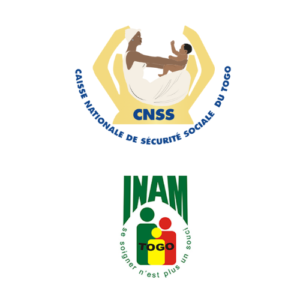

Ask-AMU is here to guide you on popular social media platforms like WhatsApp, Telegram, and TikTok.

Ask-AMU is here to guide you on popular social media platforms like WhatsApp, Telegram, and TikTok.
Designed to inform, educate, and empower, Ask-AMU makes it easier than ever for you to engage with your AMU (Assurance Maladie Universelle) health coverage in Togo.

Whether you're figuring out your health insurance plan, identifying your managing organization, understanding your financial contribution, or registering for a plan, Ask-AMU simplifies it all.
Ask-AMU provides a decision-making dashboard with tools to visualize key performance indicators through easy-to-understand charts and data, helping decision-makers manage the AMU program more effectively.